来源：https://ki9cyy7wy03.feishu.cn/docx/ByU7dOhOUorzQqxgGilcS463nfd
首先简短介绍下自己：
嗨喽，大家好。我是逍遥，一名手游公司的95后打工人，也是生财有术第七期的新圈友
从19年接触互联网项目，最开始做自媒体影视解说类型账号（西瓜视频，大鱼号，百家号等）
然后到中视频计划，到现在的中老年书单号项目。
话不多说。
今天主要给大家分享一下我目前做“中老年书单号”的一个心得：
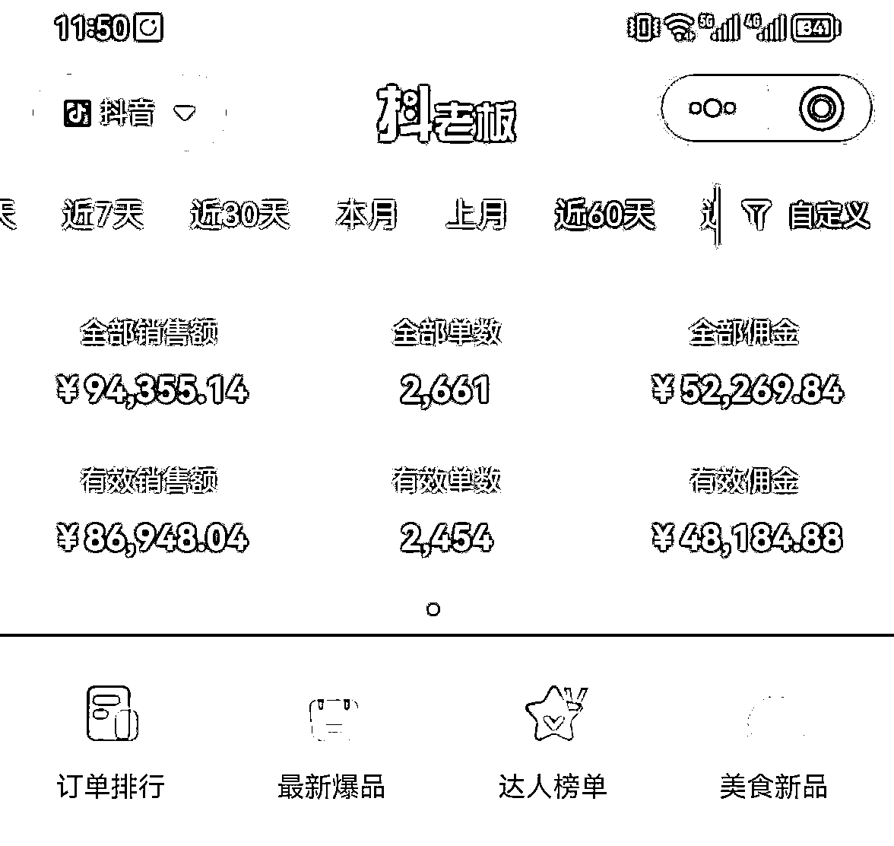
22年的10月份，我刷到了一场抖音直播，大概内容是：“四个舌头，然后产品是养生茶”，这个直播间一个小时，商品随便出了几千单，评论区清一色的询问主播，迫不及待想买商品的评论，这一下勾起了我的兴趣，我大概思考了一下，养生茶这种品类（单价并不低，最便宜的茶包也是售价58.8元），但是利用了人们害怕得病的一个心理，牢牢的勾住了用户的痛点，所以当时就萌生了想做茶包类的想法，但是自己对于带货完全一窍不通，于是我在知乎开始搜索，在我看来中老年人对于互联网的需求和认知其实并不清晰，只要我们的内容能够让他们认可，他们其实是很愿意付费的，而且中老年人大多都有退休金，在付费这块其实并不比年轻人差，于是我开始了我的中老年书单号项目。
加入生财圈之后，才发现其实有很多中老年书单号的大佬，关于账号的起号运营这块，我的方式与他们基本是一致的，所以我就不在这里一一赘述了。详细可以看下面拱卒大佬的文章。虽然是2022年发布的，但是现在依旧不过时，里面的细节都是非常详细和到位的。
《抖音中医蓝海书单号，0基础首月利润过万，一万五千字复盘分享》
而我们既然是做带货类型的项目，那么我们的最终目的一定是去出单。那么怎么能够出单就成了困扰大部分人的问题，有很多新人，他们的起号没有问题，千粉很快，但是一到带货了，就开始挠头了。今天我要分享的重点也就是我是如何去测品，以及我是如何做到自然流一天能连爆三条10W+带货视频，出单1200+的一个选品运营思路。
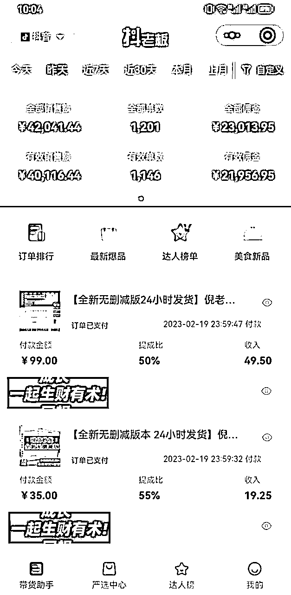
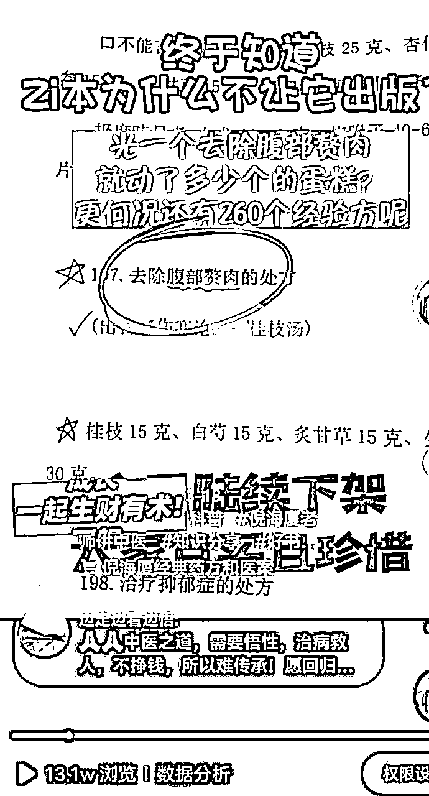
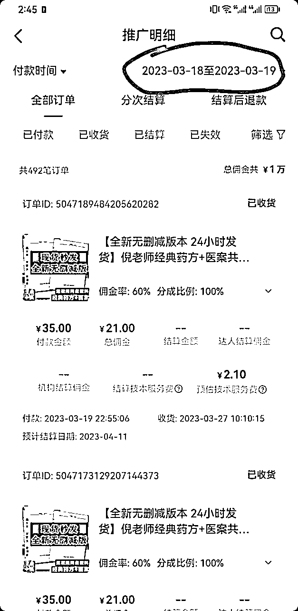
测品非常重要，每个账号的属性不同，能出的品也不相同，找到对应账号的品，才能更容易出单甚至爆单。
粉丝男女比例，年龄占比，在我的认知里面，你发作品之后抖音会给你的账号打上标签，而你的粉丝，大几率会决定你后续发视频他的推送人群画像。这也就是为什么很多账号一转型，立马就没流量的原因。那么怎么看自己账号的粉丝人群属性呢？
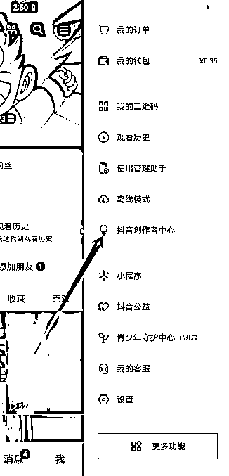
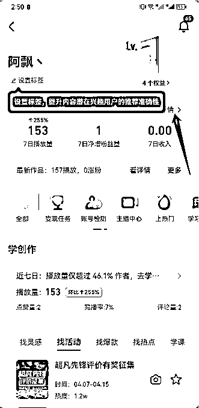
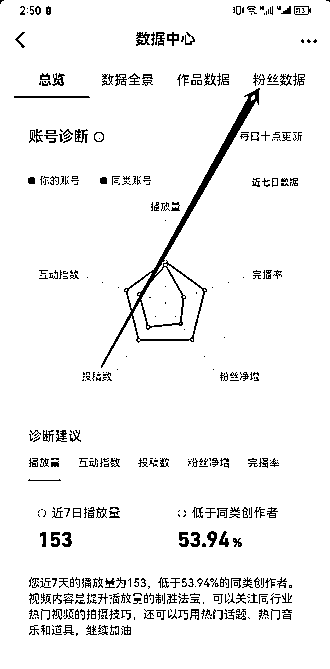
当我们足够了解自己的粉丝属性之后（我一般只会着重注意自己账号粉丝的男女比例，年龄区间），找到和自己粉丝画像差不多的账号，对标粉丝越少越好，并且爆过单的最近的账号最好，直接去重它的素材。怎么找和自己粉丝画像一致的账号，我采用的是考古加，像官方的巨量百应也是可以做到的。就以我常用的考古加为例。
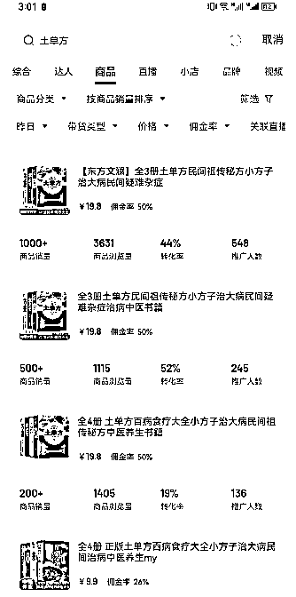
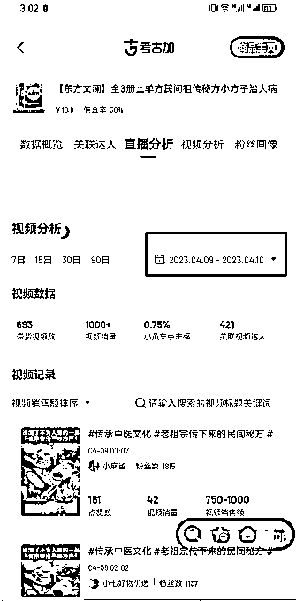
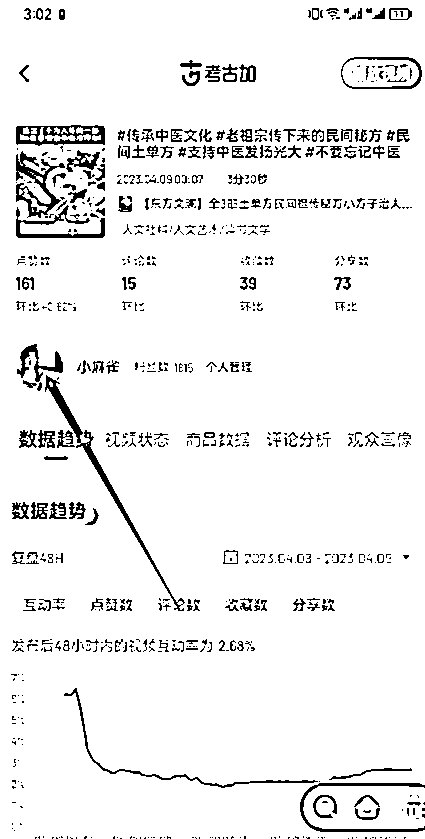
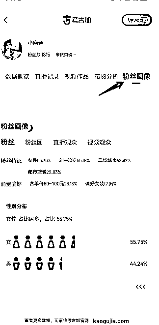
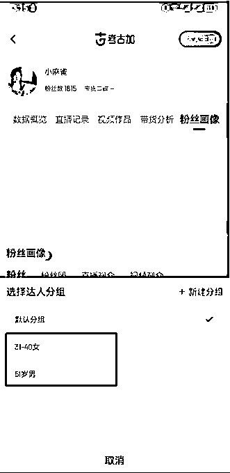
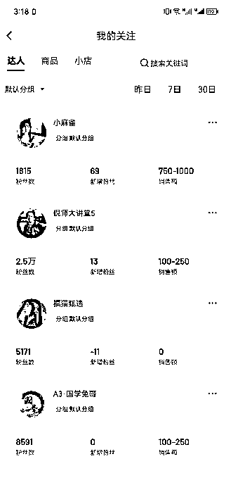
第一步也是找寻目前市面上比较爆的品。在我们没有选品的感觉的时候
我一直信奉一句话“紧跟爆款，只有品爆，出单才会更容易”
首先我们照样找到商品，选择出单最好的商品（出单最好=销量/推广人数，就下图为例，809人卖1W+，1310人卖8000+，相比较起来，第一个的转化效率高于其他商品，所以我们选品挂品也要找到出单效率最高的品）不然可能同样的爆款素材，就因为商品的链接不同，会导致出不了单的情况！所以我把他比作武士选择武器，不然空有功夫，拿着锈迹斑斑的刀，依旧难以发挥。
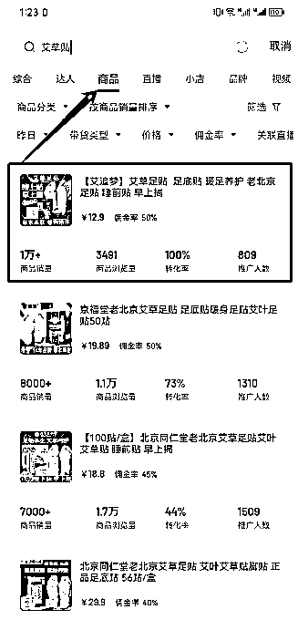
进入到商品主页之后，选择粉丝画像，然后再点下面的成交画像，就能清楚的看到购买这个商品的人群是什么样的，是否是你的目标人群（也就是这把兵器你拿着是否趁手）
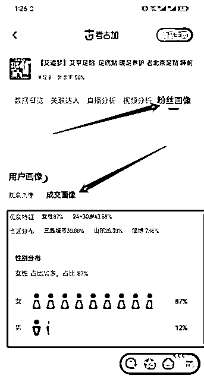
做中医书单号的圈友可能见过潘德孚这个化疗的爆款素材还有司马南开头的一个素材。他们的承接商品都是土单方这本书。
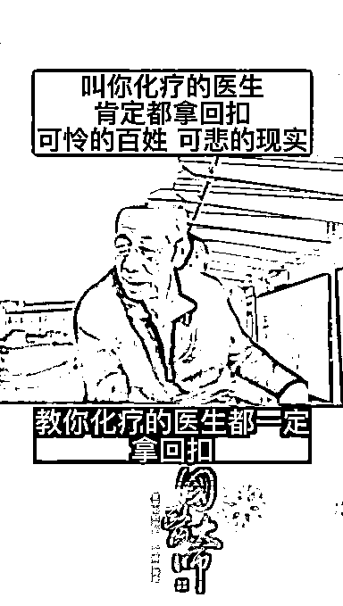
当时土单方的主流素材就是这两个。并且出单效果都是非常的好。
当时我萌生了一个想法。既然两个都是爆款，我是不是可以把他两结合起来出一个素材呢？
由于我之前提过我做了三年的电影解说自媒体。
在电影解说，我们更加注重的是开头
“钻石一秒，黄金3秒，15秒设一个钩子”
于是我把电影解说这一套套用在了这个带货视频上。
我自己收集了大量爆款视频的开头引导争论的话题素材
然后添加在自己视频的前三秒，结合带货
最好的方式是找寻这个品的用户群体痛点，做到痛点前置
于是我把司马南开头的这一句“我想请大家看一段惊心动魄的视频”
结合了后面潘德孚这个化疗的爆款素材。
当天就跑出了24.5W的播放量。虽然这条视频没有带货，但是却引导橱窗下单，单号当天获利1200。
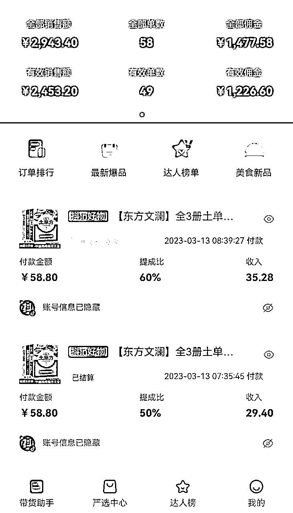
总结来说，爆款原创素材的前提，一定也是建立在爆款素材之上。我们要做的是做到把多爆款素材做内容整合
然后利用一些我上面提到的小技巧去提升他的爆款几率，切勿陷入无目标的自嗨式创作。
像我的话，找到符合自己粉丝画像的品之后，我会去重爆款素材，千粉的话就是每天早晚各一条（同一个素材，去重两次）连续两天，如果流量不好，不出单的情况下，我会先换另一条爆款视频去重，再发两天。如果还是不好，直接换别的品，但凡期间出了一单我都会继续发，然后重复上面的步骤，直到不出单，选择换素材换品。（因为抖音的推流机制，他并不是每一次都会投中你的目标人群，何不让子弹多飞一会呢）
我今年一月份刚入局的时候，像倪海厦这类视频横飞，基本很少有违规的情况，但是目前来说，违规率普遍上升。给大家看一组对比（左边是今年我刚入局时候的大盘素材，右边是现在的大盘素材）。
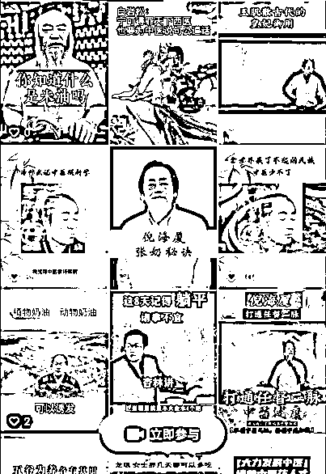
最明显的感受就是，真人出境已经变多了，传统的混剪野蛮生长时期已经逐步往正轨走。
而我也经常有视频爆了之后，第二天就会封号30天。
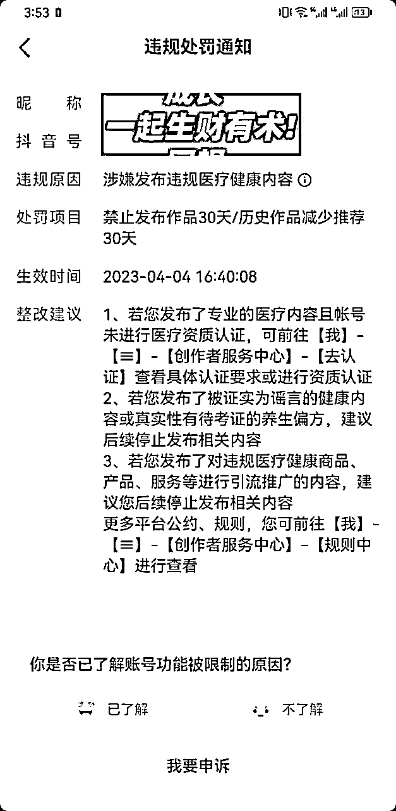
这也迫使很多做矩阵的同行，不得不重新规划一下后续的路线。
当然既然平台对内容的把控更加严格，我们更应该做的是拥抱平台。
正所谓上有政策，下有对策。
我后续的规划想法大概有三点。
不知道圈友有没有曾经做过情感号的。抖音曾经的情感号配上中视频计划，着实是一阵风口
不少人薅了不少平台的流量分成。大致做法就是真人出境然后念稿，稿子的内容无非是两性、
婆媳关系之类的话题。当时很多人走的就是矩阵玩法，我会去各种宝妈兼职群，去找宝妈
来录制视频（价格并不高。一条几分钟的视频才20块左右），她们负责念稿，然后把拍好的视频发过来我们加字幕剪辑。目前的中医号，依旧是可以这么去跑通的。甚至有想把花的这20块赚回来的，还可以开通中视频计划，赚抖音的流量分成钱，在头条是：大概15块/每万播，在抖音是：大概5块/每万播。
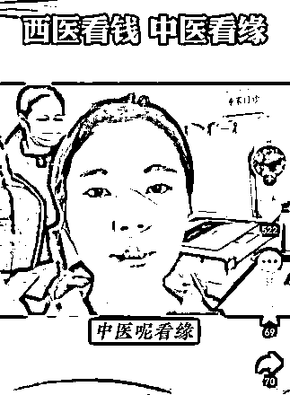
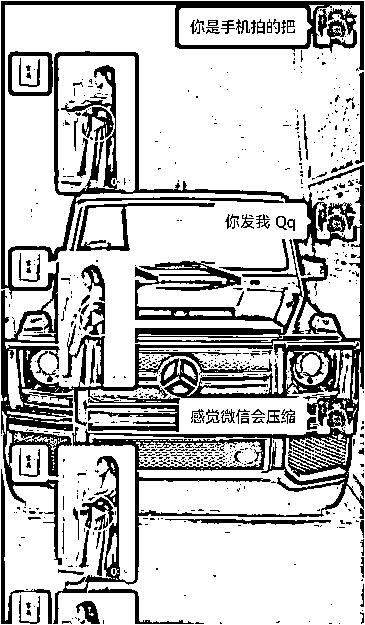
什么叫高原创度二剪路线呢。
鉴于真人出境和混剪的中间是有一个临界点的
在抖音的判定机制来说的话。
判定是否是原创的二创标准是是否有加入个人观点。
我们找到自己想做的素材，然后加入自己的解说，衔接原素材。
表达出自己的看法和观点想法。这样也是不会违规的。前提是你自己的解说
不能是纯抄袭的。具体参考的类型可以看看娱乐资讯号。
他们大概会开始先用机器人配音说一段：
“出大事了，xxx竟然和xxx同台了，这节目效果不要太好笑”+视频原素材。
大家可以去看一下每日的抖音热榜娱乐相关。点开话题，排行前几的都是娱播号。
那我们的中医号也是可以套用这种模板的。
另一种是盘点类型的。
比如我们带土单方这个产品。我会搜寻好几个土单方的原素材，注意一定要是原素材
就是比如说是潘德孚，我们要找潘德孚说话的视频，而不是别人解说的那种。
找5-6段以上。我们在每段中间衔接转场钩子来引出下一个片段。
这种盘点在官方认定也是属于原创二剪的。
但是每一个片段的时长一定不能超过15秒，这样还是会被判的。
我每天都会翻看考古加的爆款素材。我发现一个很有意思的点。
中医书单号的霸榜账号却常年是好物号。而且都是只有1000多粉丝的账号。
他们每个账号都是发着相同的视频。可以说一秒都没改。
照样是可以爆单和出单的。这当时勾起了我极大的好奇心
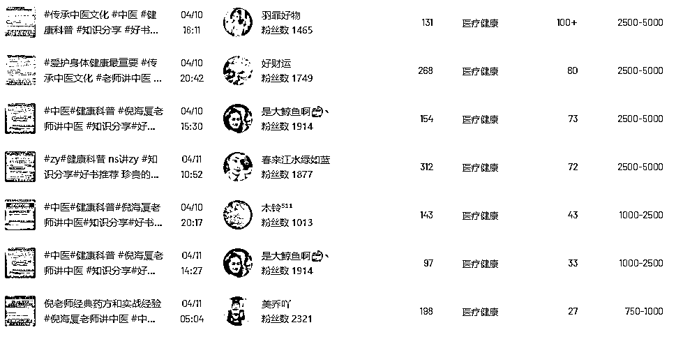
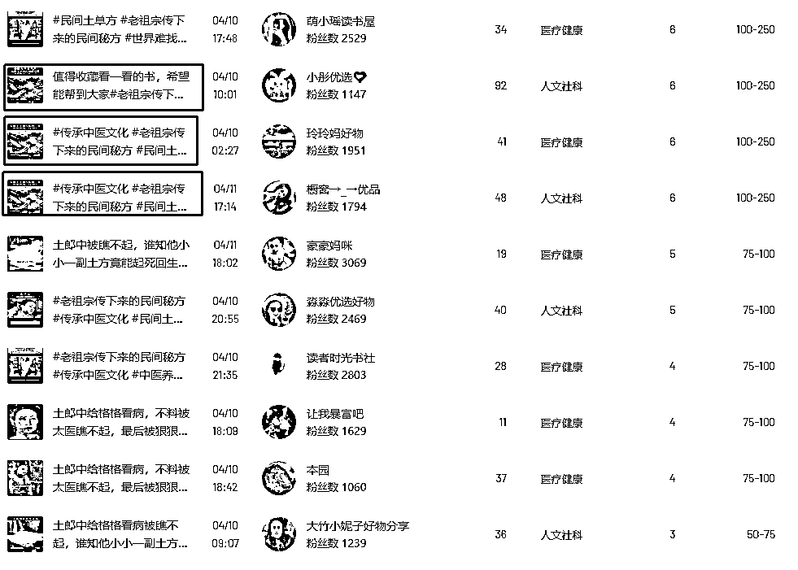
我通过各种方式联系上了做好物的同行，付费进入了他们的社群。
发现他们实际上是用了一款搬运软件，这款软件可以直接搬运任何视频（当然也是会有封号率的）
而这种做法要做的我们就是多拍自己的生活实景，提升整个账号的原创度，来极大的降低封号率。
从内容端因为是纯搬运，那么就极大减少了内容产出的时间。
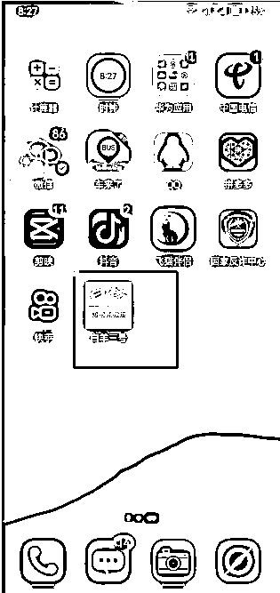
然后我们把处理过的视频发在抖音上就可以了，抖音不过人工审核是检测不出来的。
我尝试着按照他们的方式做了一个账号，昨天的数据贴出来给大家看一下。
带货视频跑了1.2W的播放没有被判搬运，赚了大概500佣金。这对于上班族和宝妈其实是非常友好的上手项目，一边上班一边就能把兼职的钱挣了。
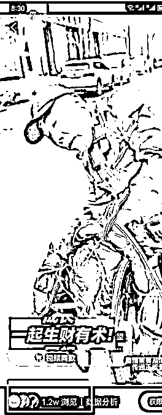
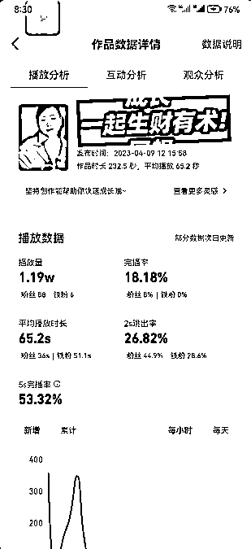
还有一种适用于会投流的大佬们，或者说找代投公司，去做中医书单号的投产。
但是我对这一块还不甚了解。所以给不了太多分享。
冰冻三尺，非一日之寒。
做任何项目都不是能够一蹴而就的，分享一下我刚入局时的一个小故事：
刚入局时候，大家都忙着养号到千粉，而我自己的账号却一直涨粉十分缓慢
当时心里很急，我之前因为做过影视号，所以我就迫不及待直接把影视号
拿去做中医带货视频（然后不出意外的扑街了），当我还一直用这个并不垂直
的账号去带货的时候，人家已经千粉并且开始带货了，有时候看似的捷径在认知
不够的时候就成了陷阱。
所以任何时候沉淀下来，往往才是最有效的。当时看着身边同行每天月入过万
而我却一单没出，心态的变化是可想而知的。但是我却一直没有质疑过自己，
我其实做任何事情是，只要没放弃，方向对了，别人都可以，那自己一定也可以？
所以让子弹多飞一会吧。
记得以前看过一个挺有意思的话，叫做“人生就是大起大落落落落落落落落落落落落落落落落落落落落落落落落落落落落落落落落落起”
没错，人的一生，大部分都是处于低波峰的状态的。
而决定波峰上升高度的也往往是低波峰状态下人们的处理方式。
做带货，肯定并不是每天都会爆单，甚至有可能一天不出单。
那么我是怎么解决这个问题呢？
我并不会去过度关注数据。就像人一直盯着手表的秒针，你会发现一分钟竟然这么长。
我是个朝九晚六的打工人。每天能利用到副业上的时间只有八点到凌晨一点这五个小时。
而我更会把时间留在重点上，比如去剪辑视频，找好对标视频。
我会每天花30分钟复盘，但是不会一直盯着我不出单的视频看。
因为再怎么去纠结，他不出单还是不出单
泰戈尔说过：如果错过太阳时你流了泪，那么你也要错过群星了
所以我复盘过后，总结以后，我会继续做新的素材
而并不会去过分关注数据。
（有时候，一觉醒来的爆单的感觉，真的很爽）
因为我目前本职工作还是打工人，所以肯定也会有时间不够的时候。
那么我是怎么去应对这种情况，先给大家PO一张我的作息表
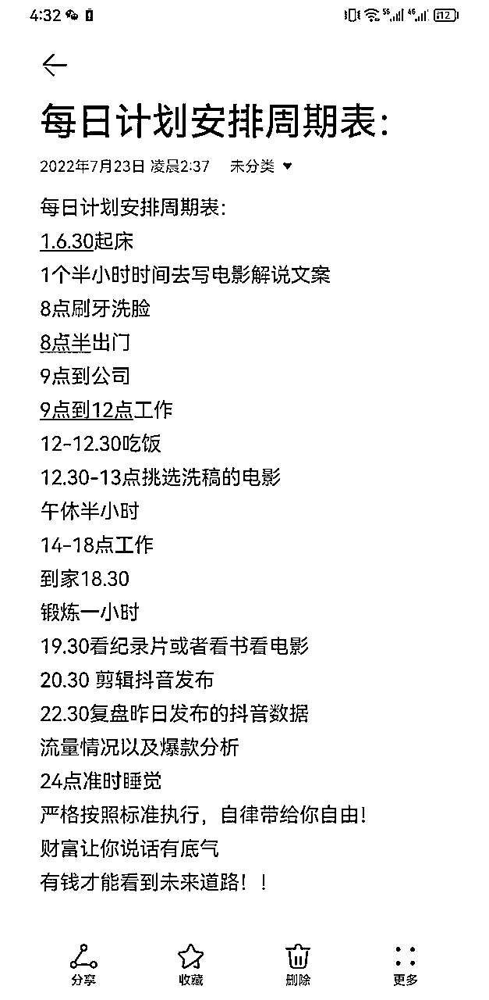
我从去年七月份开始。就尽量坚持这张作息表来权衡工作和副业的时间。
PO出这张图其实是想说，我们每个人都有很多碎片化时间，是我们没有在意的。
我们要做的时候，提前一天规划好第二天的一个时间。把他列出一项项列出来。
这样可以避免浪费很多时间。然后遇上突发情况怎么去做处理。
我一般会每天多做一点视频，屯在我的电脑上。这样就算哪一天比如说公司加班。
那么也是可以直接发库存的。所以我会尽可能在工作的时间，把效率最大化。
然后下图是一个上班的宝妈他的一个时间规划。
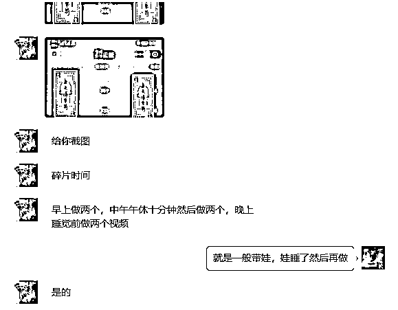
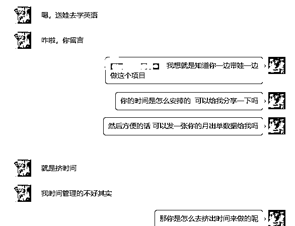
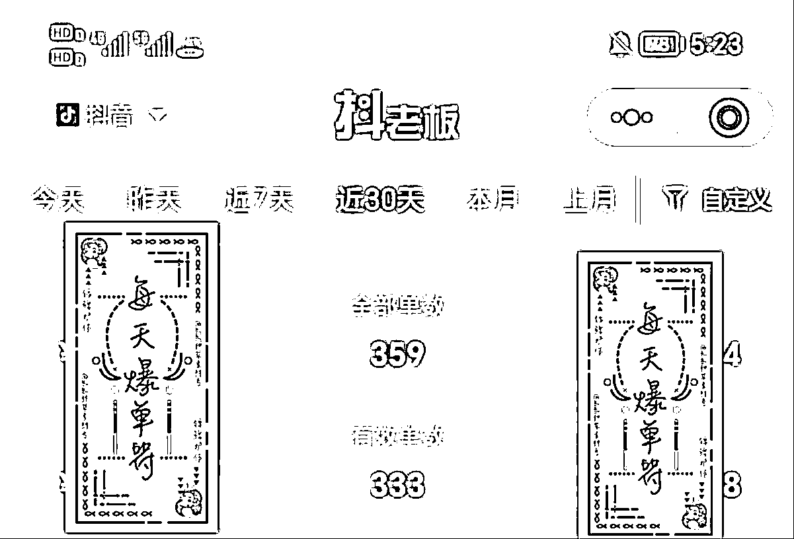
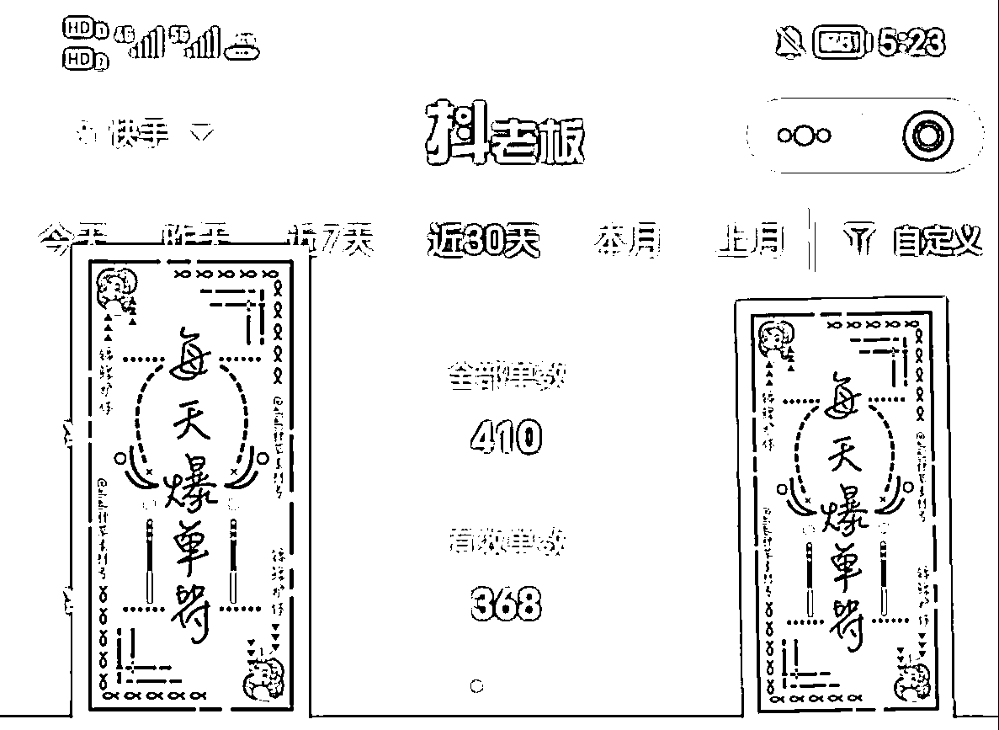
总的来说，我们既然是兼职，就更加要有时间规划的意识。
把第二天的事情列出来。才是最好的提升效率的办法。
整个项目的流程的话，其实都没有特别难的技术含量。
核心是对内容的把控和招品的一个感觉。
所以对于已经跑通，并且想提效但是又不想过早承担巨大风险的朋友。
首推的当然是奇杰大佬的批量剪辑，能极大的提高我们的产出效率。
其次可以先对接剪辑的外包兼职，这样我们也相当于省去了租场地，开启了工作室。
我们只需要把找好的素材，发给兼职，让他们去做剪辑，给我们产出。
我们负责发布就行。当然质量这关还是需要我们自己把控的。
但是弊端是，兼职剪辑普遍不稳定，可能一个人做一段时间就不做了，又需要重新去找。
以上就是我做中老年书单号两个月的一个心得分享。
今天看了“孙策”大佬的《创业的层级决定利润的天花板》感触良多，创业者不进则退，回想自己做互联网项目也有四年了。但是却一直没有审视自己的层级，做的却还是第一层级的模式。
有幸今年加入生财团队，感谢笑起来很好看的@梁靠谱 给我的细心指导。也感谢我的好朋友@谢奇遇，向我力荐生财。让我有机会能认识更多行业的大佬。这是我第一次发帖，感谢生财。如果大家有什么想了解的，可以直接评论留言。
我是逍遥，一个不喜欢被拘束的逍遥散人。